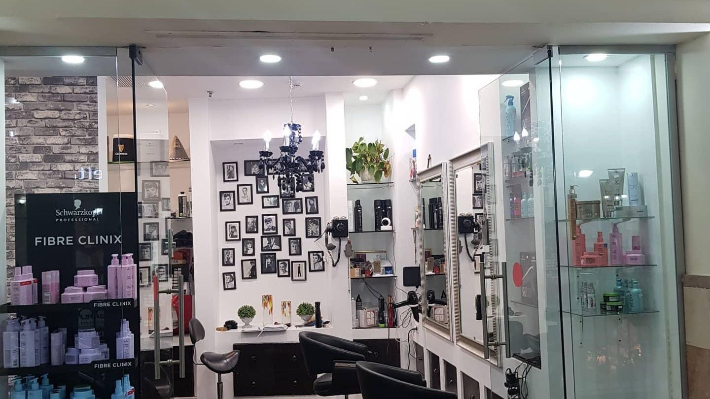
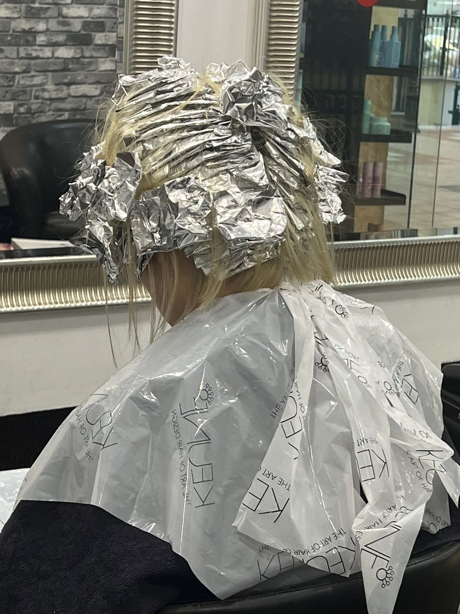
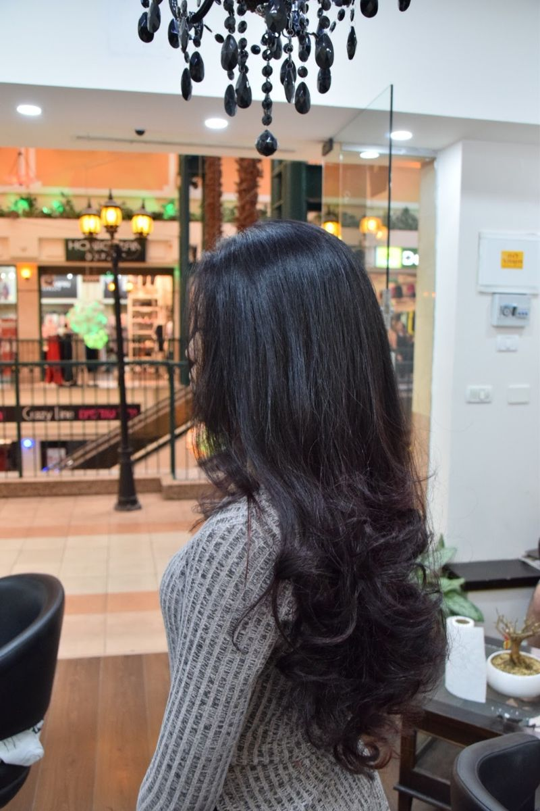
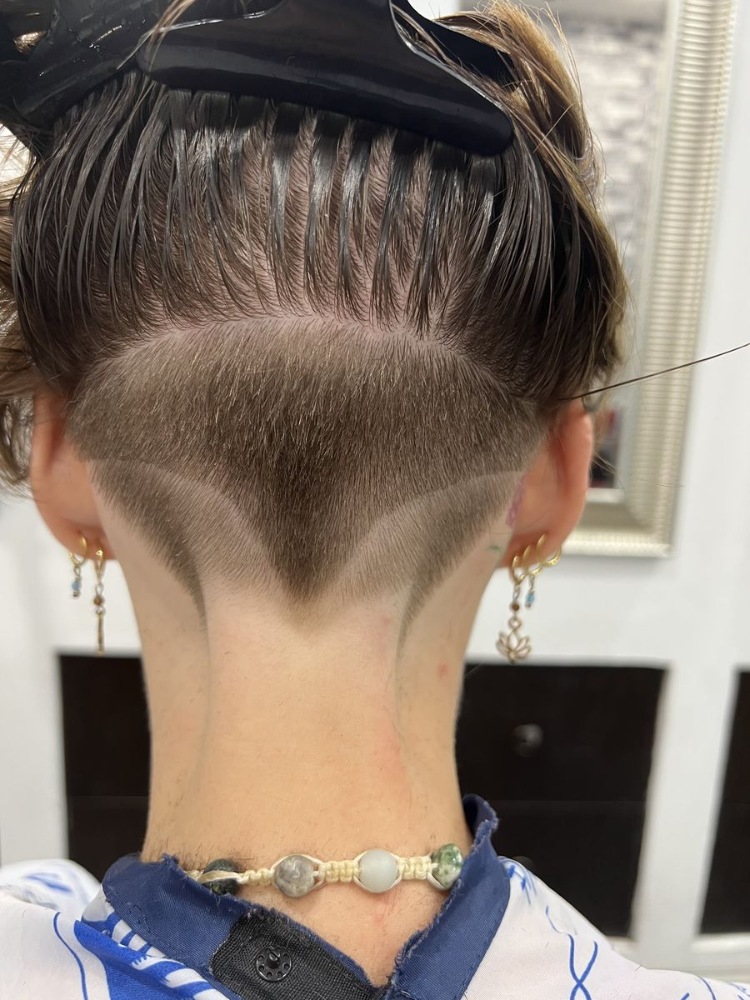

גווניםHighlights
פויל אחרי פויל, קווצה אחרי קווצה.Foil after foil, strand by strand.
קונספט לדוגמה שנבנה עבור סטיב עיצוב שיער STEVE Hair Design · זה אינו האתר הרשמי של העסקA sample concept built for STEVE Hair Design · This is not the business’s official website
סטיב עיצוב שיער (STEVE Hair Design): תספורת, צבע, גוונים ופן, בקניון סיטי סנטר, שדרות בן גוריון 6, חיפה.STEVE Hair Design: cuts, colour, highlights and blow-dries, inside City Center mall, 6 Ben Gurion Blvd, Haifa.




סלון קטן בשדרה המקורה של סיטי סנטר: פנסי רחוב, מעקה ירוק ונברשת שחורה.A small salon on City Center’s indoor boulevard: street lamps, a green railing and a black chandelier.
תמונות אמיתיות מעמוד המספרה בגוגל.Real photos from the salon’s Google page.
פויל אחרי פויל, קווצה אחרי קווצה.Foil after foil, strand by strand.
שיער ארוך, גלים רכים ונפח.Long hair, soft waves, body.
קו נקי וצורה בעורף.A clean line and a shape at the nape.
״ספר ברמה גבוהה מאוד.״“A hairdresser of a very high standard.”
״שירות אדיב, מקצועי ומרגישים שחשוב לו שהלקוח ייצא מרוצה! פעם שנייה שיוצאת מרוצה מאוד וכמובן שאחזור שוב!״
“Kind, professional service, and you can feel it matters to him that the customer leaves happy! The second time I’ve left very happy, and of course I’ll be back!”
״ספר מוכשר, זריז, נעים הליכות. מספרתו נאה ונקייה. יוצאת מרוצה וחוזרת בשמחה למספרתו הממוקמת בקניון מרשים!״
“A talented, quick and pleasant hairdresser. His salon is nice and clean. I leave happy and gladly come back to his salon, in an impressive mall!”
״המקום בתוך קניון סיטי סנטר שבשדרות בן גוריון בחיפה. מספרה במקום מרכזי, ניקיון לתפארת, והכי חשוב ספר ברמה גבוהה מאוד. ממליץ בחום.״
“The place is inside City Center mall on Ben Gurion Boulevard in Haifa. A central location, spotlessly clean, and most importantly a hairdresser of a very high standard. Highly recommended.”
״מפונה מהבית בגבול הלבנון, עם שיער מוזנח, ללא הזמנה מראש, באתי, התקבלתי, סטיב סיפר אותי בדיוק כפי שביקשתי. הרבה הרבה תודה.״
“Evacuated from my home on the Lebanese border, with neglected hair and no appointment, I came in, was received, and Steve cut my hair exactly as I asked. Many, many thanks.”
בקניון סיטי סנטר, שדרות דוד בן גוריון 6, חיפה. מחפשים את השלט STEVE עם פנסי הרחוב.Inside City Center mall, 6 David Ben Gurion Blvd, Haifa. Look for the STEVE sign by the street lamps.
בוואטסאפ או בטלפון 050-442-2740, או בעמוד קביעת התורים של המספרה.On WhatsApp or by phone at 050-442-2740, or on the salon’s booking page.
שני עד חמישי ושבת 10:00–20:30, שישי 10:00–15:00, ראשון סגור.Monday to Thursday and Saturday 10:00–20:30, Friday 10:00–15:00, closed Sunday.
תספורות, צבע וגוונים, פן ועיצוב שיער, כמו בתמונות שבעמוד.Cuts, colour and highlights, blow-dries and styling, like in the photos on this page.